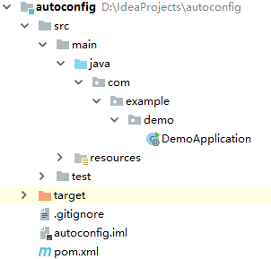
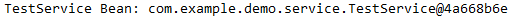
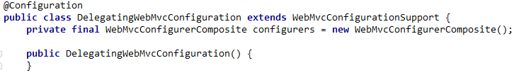
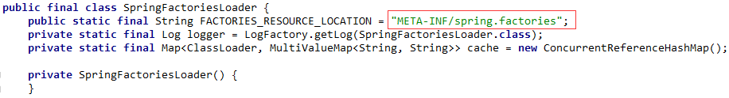
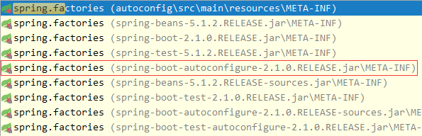
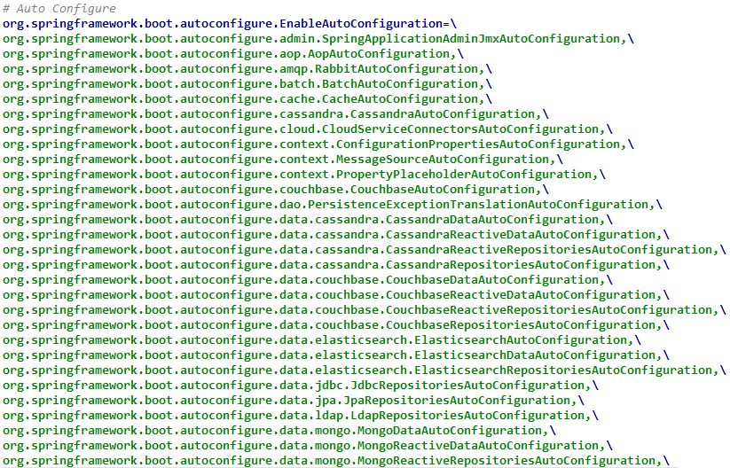
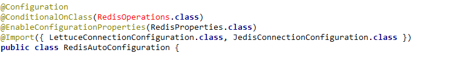
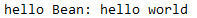

模式注解
Stereotype Annotation俗称为模式注解，Spring中常见的模式注解有@Service，@Repository，@Controller等，它们都“派生”自@Component注解。我们都知道，凡是被@Component标注的类都会被Spring扫描并纳入到IOC容器中，那么由@Component派生的注解所标注的类也会被扫描到IOC容器中。下面我们主要来通过自定义模式注解来了解@Component的“派生性”和“层次性”。
@Component “派生性”
新建一个Spring Boot工程，Spring Boot版本为2.1.0.RELEASE，artifactId为autoconfig，并引入spring-boot-starter-web依赖。项目结构如下所示:

在com.example.demo下新建annotation包，然后创建一个FirstLevelService注解：
1 | ({ElementType.TYPE}) |
这个注解定义由@Service标注，查看@Service的源码会发现其被@Component注解标注，所以它们的层次关系为:
1 | └─@Component |
即@FirstLevelService为@Component派生出来的模式注解，我们来测试一下被它标注的类是否能够被扫描到IOC容器中：
在com.example.demo下新建service包，然后创建一个TestService类：
1 |
|
在com.example.demo下新建bootstrap包，然后创建一个ServiceBootStrap类，用于测试注册TestService并从IOC容器中获取它：
1 | ("com.example.demo.service") |
运行该类的main方法，控制台输出如下：

@Component “层次性”
我们在com.example.demo.annotation路径下再创建一个SecondLevelService注解定义，该注解由上面的@FirstLevelService标注：
1 | ({ElementType.TYPE}) |
这时候层次关系为：
1 | └─@Component |
我们将TestService上的注解换成@SecondLevelService，然后再次运行ServiceBootStrap的main方法，输出如下：
可见结果也是成功的。
这里有一点需要注意的是：@Component注解只包含一个value属性定义，所以其“派生”的注解也只能包含一个vlaue属性定义。
@Enable模块驱动
@Enable模块驱动在Spring Framework 3.1后开始支持。这里的模块通俗的来说就是一些为了实现某个功能的组件的集合。通过@Enable模块驱动，我们可以开启相应的模块功能。
@Enable模块驱动可以分为“注解驱动”和“接口编程”两种实现方式，下面逐一进行演示：
注解驱动
Spring中，基于注解驱动的示例可以查看@EnableWebMvc源码：
1 | (RetentionPolicy.RUNTIME) |
该注解通过@Import导入一个配置类DelegatingWebMvcConfiguration：

该配置类又继承自WebMvcConfigurationSupport，里面定义了一些Bean的声明。
所以，基于注解驱动的@Enable模块驱动其实就是通过@Import来导入一个配置类，以此实现相应模块的组件注册，当这些组件注册到IOC容器中，这个模块对应的功能也就可以使用了。
我们来定义一个基于注解驱动的@Enable模块驱动。
在com.example.demo下新建configuration包，然后创建一个HelloWorldConfiguration配置类：
1 |
|
这个配置类里定义了一个名为hello的Bean，内容为hello world。
在com.example.demo.annotation下创建一个EnableHelloWorld注解定义：
1 | ({ElementType.TYPE}) |
我们在该注解类上通过@Import导入了刚刚创建的配置类。
接着在com.example.demo.bootstrap下创建一个TestEnableBootstap启动类来测试@EnableHelloWorld注解是否生效：
1 |
|
运行该类的main方法，控制台输出如下：
说明我们自定义的基于注解驱动的@EnableHelloWorld是可行的。
接口编程
除了使用上面这个方式外，我们还可以通过接口编程的方式来实现@Enable模块驱动。Spring中，基于接口编程方式的有@EnableCaching注解，查看其源码：
1 | ({ElementType.TYPE}) |
EnableCaching注解通过@Import导入了CachingConfigurationSelector类，该类间接实现了ImportSelector接口，在 深入学习Spring组件注册 中，我们曾介绍了可以通过ImportSelector来实现组件注册。
所以通过接口编程实现@Enable模块驱动的本质是：通过@Import来导入接口ImportSelector实现类，该实现类里可以定义需要注册到IOC容器中的组件，以此实现相应模块对应组件的注册。
接下来我们根据这个思路来自个实现一遍：
在com.example.demo下新建selector包，然后在该路径下新建一个HelloWorldImportSelector实现ImportSelector接口：
1 | public class HelloWorldImportSelector implements ImportSelector { |
如果看不懂上面这段代码含义的朋友可以阅读深入学习Spring组件注册一文。
接着我们修改EnableHelloWorld：
1 | ({ElementType.TYPE}) |
上面导入的是HelloWorldImportSelector，而非HelloWorldConfiguration。
再次运行TestEnableBootstap的main方法，你会发现输出是一样的。
自动装配
Spring Boot中的自动装配技术底层主要用到了下面这些技术:
Spring 模式注解装配
Spring @Enable 模块装配
Spring 条件装配装（深入学习Spring组件注册中有介绍）
Spring 工厂加载机制
Spring 工厂加载机制的实现类为SpringFactoriesLoader，查看其源码：

该类的方法会读取META-INF目录下的spring.factories配置文件，我们查看spring-boot-autoconfigure-2.1.0.RELEASE.jar下的该文件：


当启动类被@EnableAutoConfiguration标注后，上面截图中的所有类Spring都会去扫描，看是否可以纳入到IOC容器中进行管理。
比如我们查看org.springframework.boot.autoconfigure.data.redis.RedisAutoConfiguration的源码：

可看到该类上标注了一些注解，其中@Configuration为模式注解，@EnableConfigurationProperties为模块装配技术，ConditionalOnClass为条件装配技术。这和我们上面列出的Spring Boot自动装配底层主要技术一致，所以我们可以根据这个思路来自定义一个自动装配实现。
新建一个配置类HelloWorldAutoConfiguration：
1 |
|
然后在resources目录下新建META-INF目录，并创建spring.factories文件：
1 | # Auto Configure |
接着在配置文件application.properties中添加helloworld=true配置
1 | helloworld=true |
最后创建EnableAutoConfigurationBootstrap，测试下HelloWorldAutoConfiguration是否生效：
1 |
|
运行该main方法，控制台输出如下：

说明我们自定义的自动装配已经成功了。
下面简要分析下代码的运行逻辑：
Spring 的工厂加载机制会自动读取META-INF目录下spring.factories文件内容；
我们在spring.factories定义了：
1
2org.springframework.boot.autoconfigure.EnableAutoConfiguration=\
com.example.demo.configuration.HelloWorldAutoConfiguration我们在测试类上使用了
@EnableAutoConfiguration注解标注，那么HelloWorldAutoConfiguration就会被Spring扫描，看是否符合要求，如果符合则纳入到IOC容器中；HelloWorldAutoConfiguration上的@ConditionalOnProperty的注解作用为：当配置文件中配置了helloworld=true（我们确实添加了这个配置，所以符合要求）则这个类符合扫描规则；@EnableHelloWorld注解是我们前面例子中自定义的模块驱动注解，其引入了hello这个Bean，所以IOC容器中便会存在hello这个Bean了；通过上面的步骤，我们就可以通过上下文获取到hello这个Bean了。
源码链接： https://github.com/wuyouzhuguli/SpringAll/tree/master/44.Spring-Boot-Autoconfiguration